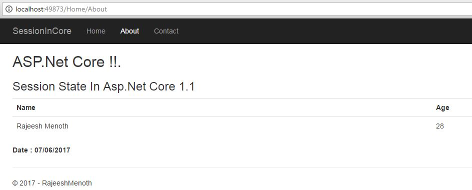

In this article, we will explain how to create a "Session State in ASP.NET Core and MVC Core".
In Session State, we can use to save and store user data while the user browses your web app. We already know that in previous versions of ASP.NET, we could store session as key value pair like this "Session["Name"] = "Rajeesh Menoth"" and implement it in an easy way. But in the latest version of ASP.NET or ASP.NET Core, we need to do a few configurations for accessing and enabling Session State in the application. The main purpose of session is maintaining user data in memory because of HTTP is a stateless protocol.
Before reading this article, you must read the articles given below for ASP.NET Core knowledge.
using System;
using Microsoft.AspNetCore.Mvc;
using Microsoft.AspNetCore.Http;
using Newtonsoft.Json;
namespace SessionInCore.Controllers
{
public class HomeController : Controller
{
const string SessionKeyName = "_Name";
const string SessionKeyAge = "_Age";
const string SessionKeyDate = "_Date";
public IActionResult Index()
{
HttpContext.Session.SetString(SessionKeyName, "Rajeesh Menoth");
HttpContext.Session.SetInt32(SessionKeyAge, 28);
// Requires you add the Set extension method mentioned in the SessionExtensions static class.
HttpContext.Session.Set<DateTime>(SessionKeyDate, DateTime.Now);
return View();
}
public IActionResult About()
{
ViewBag.Name = HttpContext.Session.GetString(SessionKeyName);
ViewBag.Age = HttpContext.Session.GetInt32(SessionKeyAge);
ViewBag.Date = HttpContext.Session.Get<DateTime>(SessionKeyDate);
ViewData["Message"] = "Session State In Asp.Net Core 1.1";
return View();
}
public IActionResult Contact()
{
ViewData["Message"] = "My Contact Details";
return View();
}
public IActionResult Error()
{
return View();
}
}
public static class SessionExtensions
{
public static void Set<T>(this ISession session, string key, T value)
{
session.SetString(key, JsonConvert.SerializeObject(value));
}
public static T Get<T>(this ISession session, string key)
{
var value = session.GetString(key);
return value == null ? default(T) :
JsonConvert.DeserializeObject<T>(value);
}
}
}
using System; using Microsoft.AspNetCore.Mvc; using Microsoft.AspNetCore.Http; using Newtonsoft.Json; namespace SessionInCore.Controllers { public class HomeController : Controller { const string SessionKeyName = "_Name"; const string SessionKeyAge = "_Age"; const string SessionKeyDate = "_Date"; public IActionResult Index() { HttpContext.Session.SetString(SessionKeyName, "Rajeesh Menoth"); HttpContext.Session.SetInt32(SessionKeyAge, 28); // Requires you add the Set extension method mentioned in the SessionExtensions static class. HttpContext.Session.Set<DateTime>(SessionKeyDate, DateTime.Now); return View(); } public IActionResult About() { ViewBag.Name = HttpContext.Session.GetString(SessionKeyName); ViewBag.Age = HttpContext.Session.GetInt32(SessionKeyAge); ViewBag.Date = HttpContext.Session.Get<DateTime>(SessionKeyDate); ViewData["Message"] = "Session State In Asp.Net Core 1.1"; return View(); } public IActionResult Contact() { ViewData["Message"] = "My Contact Details"; return View(); } public IActionResult Error() { return View(); } } public static class SessionExtensions { public static void Set<T>(this ISession session, string key, T value) { session.SetString(key, JsonConvert.SerializeObject(value)); } public static T Get<T>(this ISession session, string key) { var value = session.GetString(key); return value == null ? default(T) : JsonConvert.DeserializeObject<T>(value); } } }
The following code contains the Key name as "SessionKeyName" & Value name as "Rajeesh Menoth". So we can set the Session String "Key" and "Value" in SetString("Key","Value").
const string SessionKeyName = "_Name"; HttpContext.Session.SetString(SessionKeyName, "Rajeesh Menoth");
const string SessionKeyName = "_Name"; HttpContext.Session.SetString(SessionKeyName, "Rajeesh Menoth");
Session["Name"] = "Rajeesh Menoth";
Session["Name"] = "Rajeesh Menoth";
We can Assign and Get the Session string value using "GetString(Name)" Method in a simple way.
ViewBag.Name = HttpContext.Session.GetString(SessionKeyName);
ViewBag.Name = HttpContext.Session.GetString(SessionKeyName);

We learned how to create Session State In ASP.NET Core and MVC Core. I hope you liked this article. Please share your valuable suggestions and feedback.